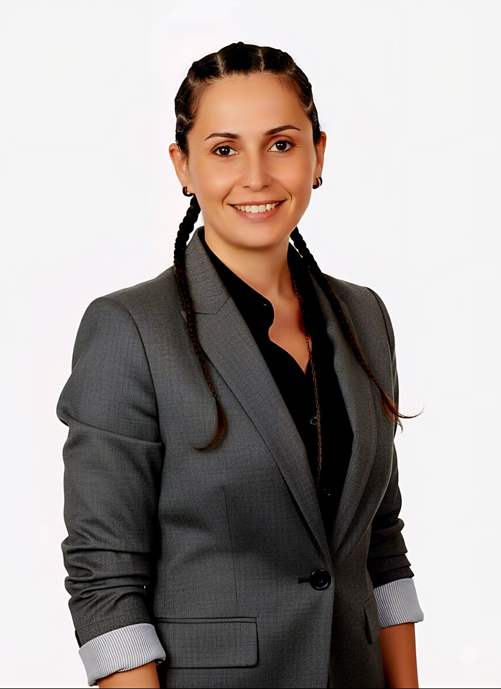

Gazetecilik
İyi bir hikâyenin, doğru soruyla ve dikkatli bir dinlemeyle başladığını öğrendim.
İnsanı anlamaya adanmış çok yönlü bir yolculuk
Sözcüklerden ilişkilere, sınıftan terapi odasına uzanan bir yolculuk. Dinlemenin, anlamanın ve yeniden başlamanın imkânlarını araştırıyorum.

Bir bakışta
Kariyerimin her döneminde aynı sorunun izini sürdüm: İnsanı gerçekten nasıl duyarız?
Gazetecilik bana doğru soruyu sormayı, eğitimcilik gelişime alan açmayı, psikoloji ise söylenen kadar sessiz kalanı da duymayı öğretti. Bugün bu deneyimleri akademik merakla bir araya getiriyor; insanı, ilişkiyi ve dönüşümü çok katmanlı bir bakışla ele alıyorum.
Yolculuğun katmanları
Her durak, insanı anlamanın başka bir dilini öğretti.
İyi bir hikâyenin, doğru soruyla ve dikkatli bir dinlemeyle başladığını öğrendim.
Öğretmenlikten eğitim yöneticiliğine uzanan yıllar, gelişimin ilişki içinde mümkün olduğunu gösterdi.
Görünen davranışın ardındaki duyguyu, ihtiyacı ve insanın kendini yeniden kurma gücünü araştırdım.
Bugün iletişim ve psikoloji birikimimi disiplinlerarası akademik çalışmalarımda buluşturuyorum.
Çalışma alanları
Temas, empati, güven ve ilişki içinde gerçekleşen psikolojik değişim.
Medyanın insan deneyimini nasıl görünür kıldığına dair eleştirel bir bakış.
İnsana alan açan, merakı koruyan ve dönüşümü destekleyen eğitim yaklaşımı.
Geçmiş bizi açıklar.
Ama hiçbir şeye mecbur bırakmaz.
— Sevdiye Teker
Söyleşi · Eğitim · Akademik iş birliği
İnsan hikâyelerine başka bir yerden bakmak, yeni sorular sormak ve anlamlı çalışmalar üretmek için yollarımız kesişebilir.
İletişim kanalları yakında burada.